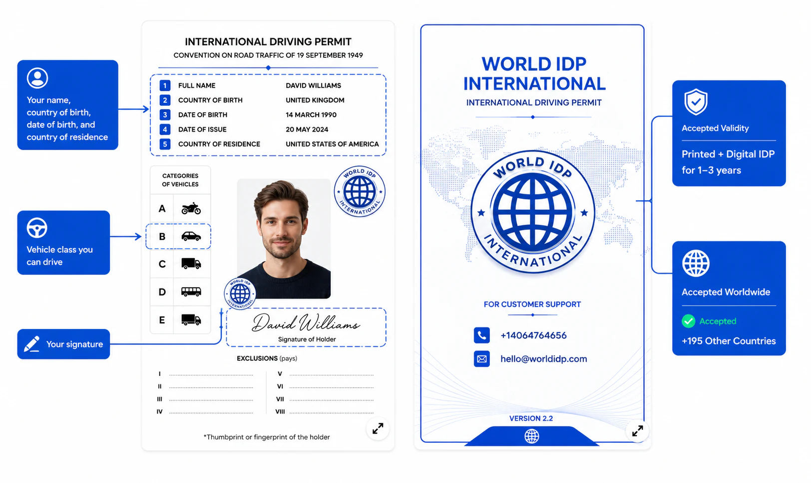
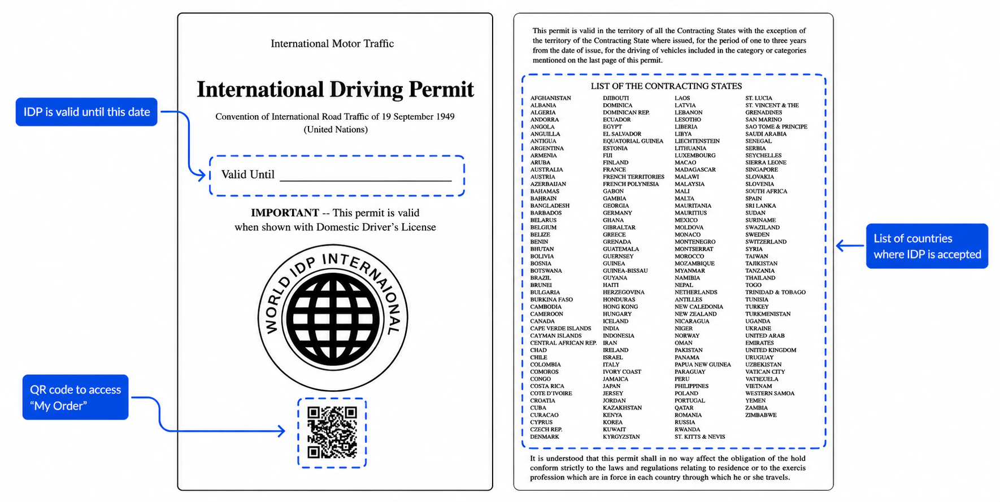
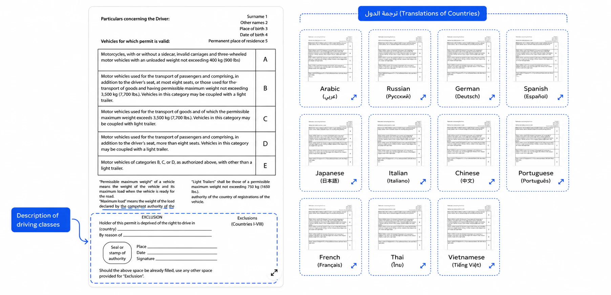
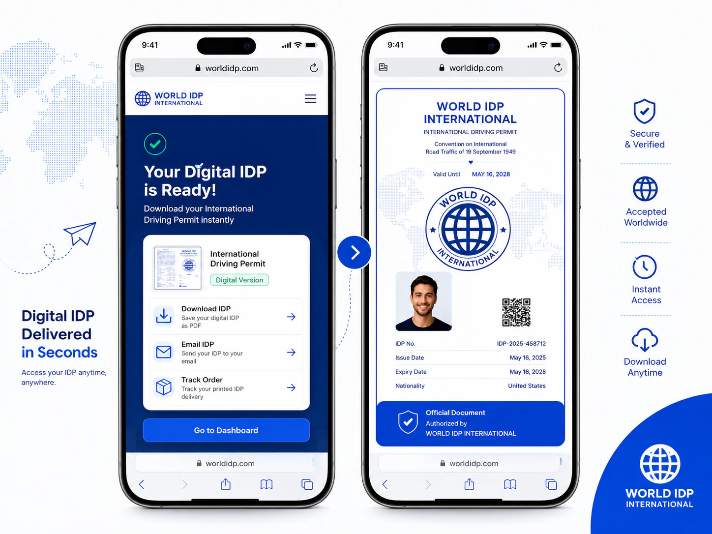

The Geneva Convention on Road Traffic
The original framework for the International Driving Permit. It is recognized across most of the world and defines the familiar grey booklet format with vehicle categories and exclusions.
An International Driving Permit (IDP) — sometimes searched as an international driver license or international driving license — is a translation-support document used with your valid national driving licence so police, border officers, hotels, and foreign authorities abroad can understand your licence details more easily.
An International Driving Permit is a booklet that translates the details of your valid national driver's license into 12 languages, following the format set by the 1949 Geneva and 1968 Vienna UN Conventions on Road Traffic. It is not a standalone license — it is only valid when carried together with your original license, and it lets authorities and car-travel providers in 195+ countries verify exactly what you are allowed to drive. The International Driving Permit meaning is simple: it is a translation, not a new licence. You may also see it called an “International Driver’s License” or IDL — that is the same document; the correct, UN-recognized name is International Driving Permit.
The IDP isn't an invention — it follows two international treaties that standardize how driving credentials are recognized across borders.
The original framework for the International Driving Permit. It is recognized across most of the world and defines the familiar grey booklet format with vehicle categories and exclusions.
A later treaty adopted by many European and other countries. Some destinations recognize only one convention, which is why broad acceptance matters when you travel.
Your IDP mirrors your national license in a standardized layout designed to be easier for foreign authorities and foreign authorities to read — here's exactly what each part holds.

The data page restates your core license details in a fixed international format, so there's no guesswork for an officer who doesn't read your language.

The cover carries the key legal note — your permit is valid only with your domestic license — plus a built-in QR code and the full directory of recognized countries.

Each vehicle category is spelled out in plain detail — motorcycles, cars, goods vehicles, buses and trailers — and the whole permit is reproduced in 12 languages so it reads natively almost anywhere.

Your IDP arrives as a downloadable PDF you can keep on your phone, with an optional printed booklet posted to your door — so you're covered whether a country accepts digital, paper, or both.
You'll likely want an International Driving Permit if any of these apply to your trip.
Foreign authorities and car rental desks may ask for an IDP alongside your valid licence when they need a readable translation.
If your license uses a different script, an IDP translates it so officials can read it instantly.
Many destinations legally require an IDP for foreign drivers — check the rules before you go.
Avoid fines, disputes or insurance issues at a traffic stop with credentials any officer can verify.
An IDP works with your license — it never works instead of it. Here's how they compare.
| Feature | International Driving Permit | National driver's license |
|---|---|---|
| Grants the right to drive | No — translation only | Yes |
| Valid on its own | No — carry both | Yes (at home) |
| Translated into 12 languages | Yes | No |
| Recognized across 195+ countries | Yes | Varies by country |
| Typical validity | 1–3 years | Several years |
| Often useful for driving abroad | Yes | Frequently not enough alone |
A clean, guided flow from your details to a travel-ready document.
Enter your driver details and destination in a short, guided online form.
Add a photo of your valid national license and a passport-style photo.
Get your digital IDP instantly, with an optional printed booklet shipped to you.
The things travelers ask us most about the International Driving Permit.
Get your International Driving Permit — digital in minutes, printed to your door, useful across many countries, and priced from just $49.
A translation of your valid national license — always carried alongside your original.